About Me
I am a data and operations analytics professional with experience designing applications, developing dashboards, preparing data, conducting analysis and automating business processes. My work focuses on transforming operational information into useful insights that support better decisions and performance.
Featured Project
CFC Customer Interaction Management & Operational Analytics
An integrated project combining a customer interaction management application with operational dashboards. It provides visibility into customer interactions, workforce attendance, product performance, incidents and operational trends.
Project Screenshots & Dashboard Gallery
Explore the application interface and operational dashboards developed as part of this project.
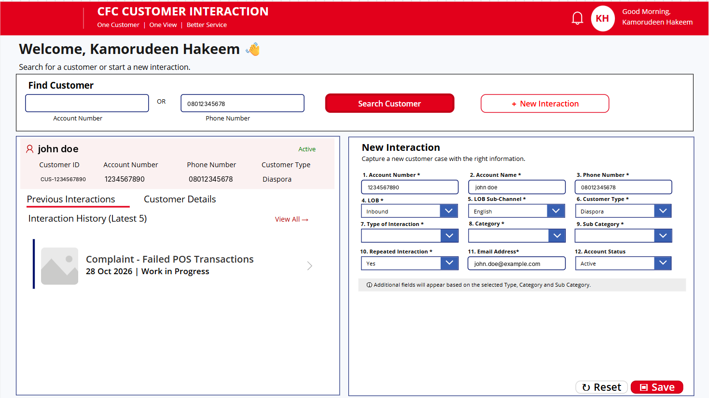
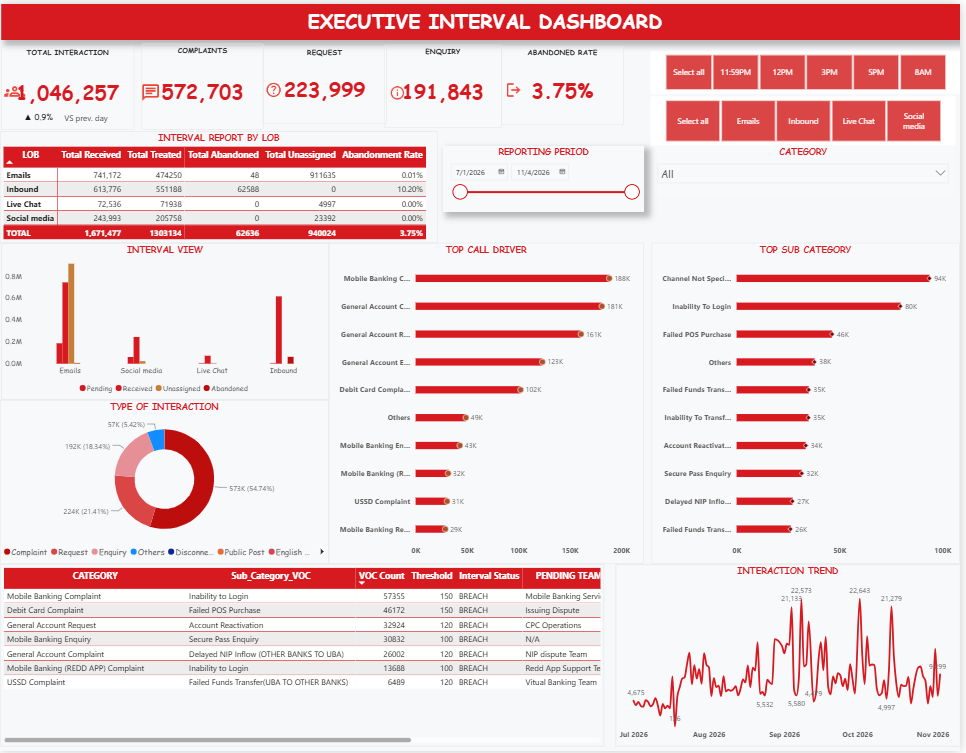
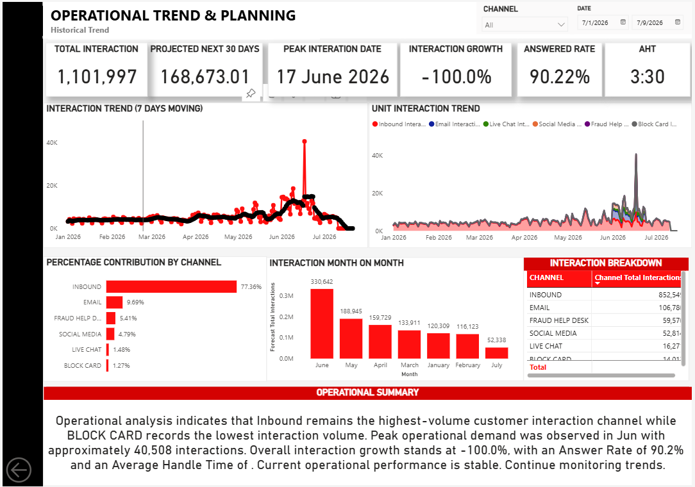
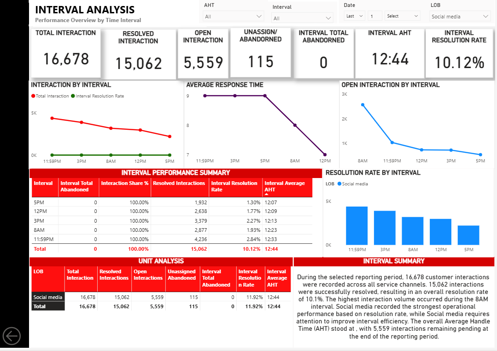
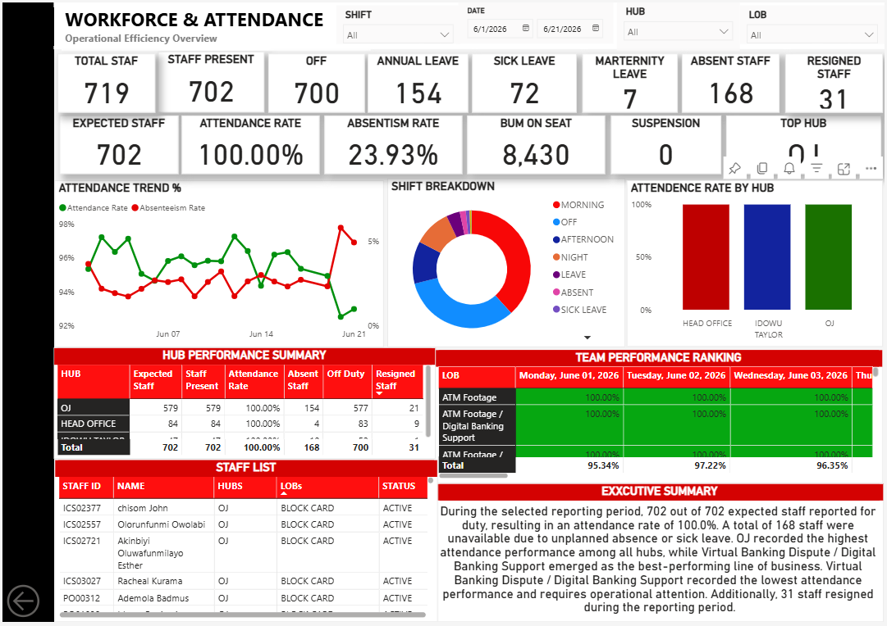
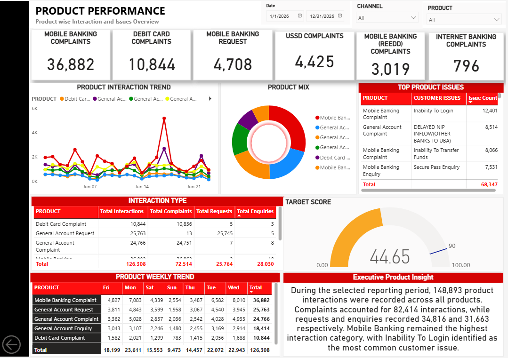
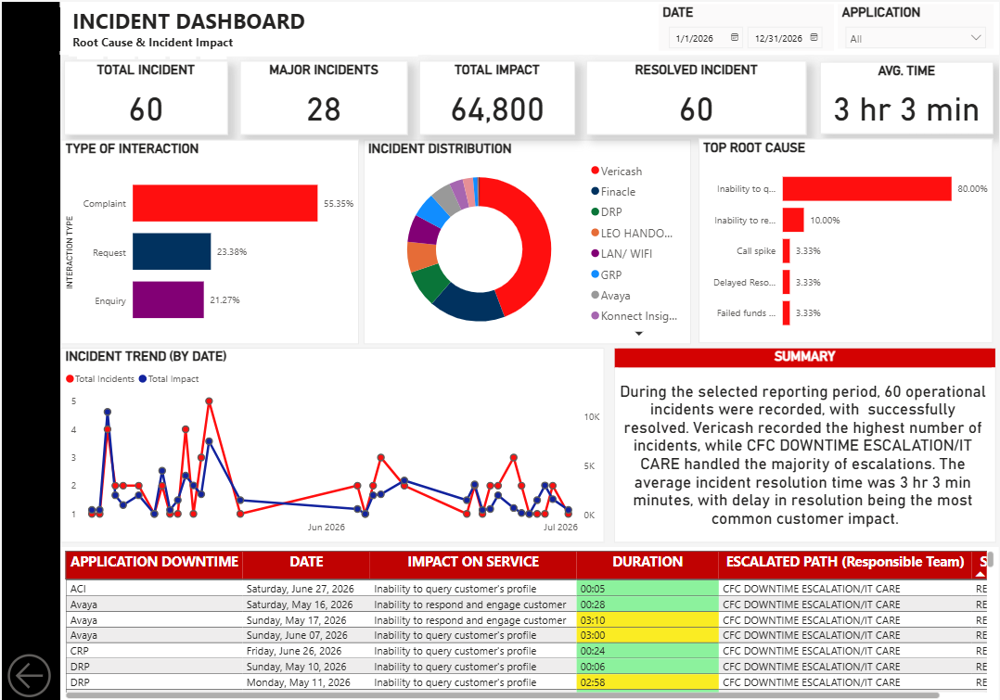
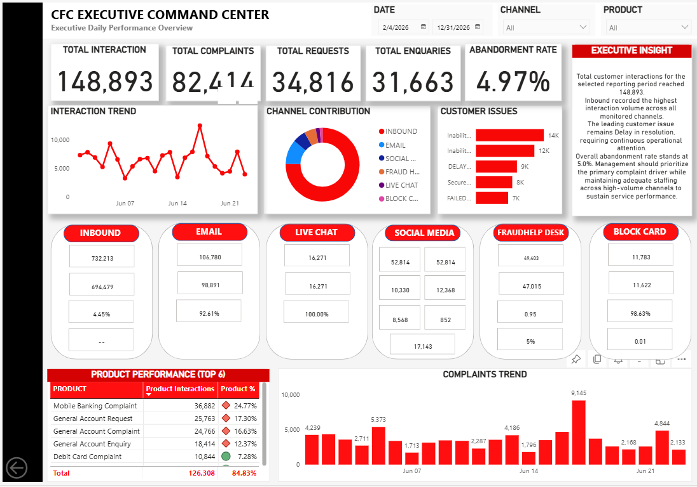
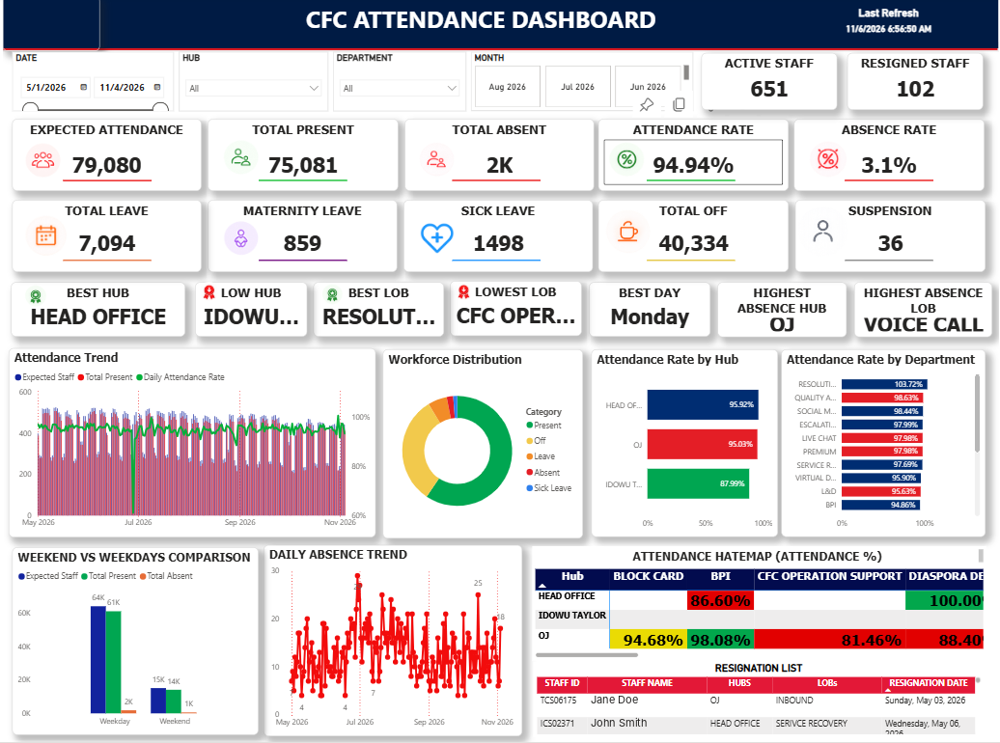
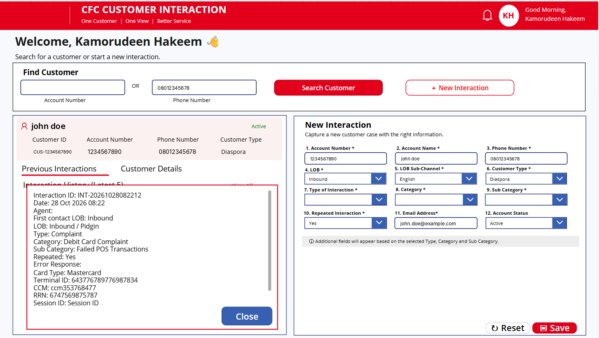
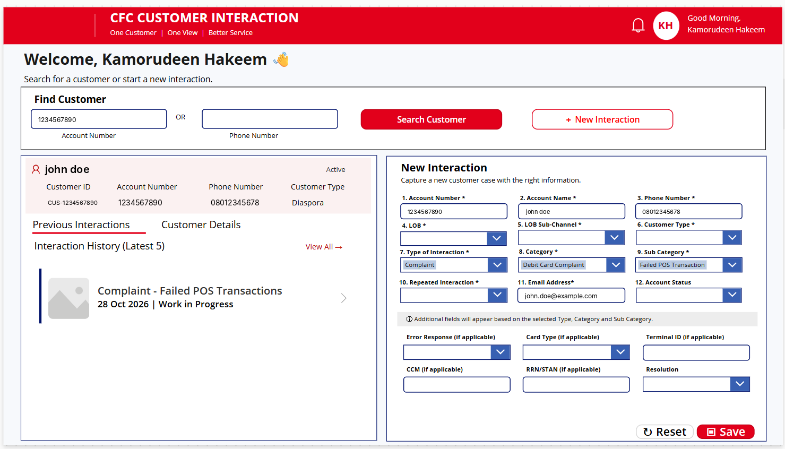
Tools & Technologies
Data Analysis
Excel, SQL and Python for data preparation, processing and analysis.
Business Intelligence
Power BI for interactive dashboards, reporting and performance monitoring.
Application Development
Power Apps for designing and developing business applications.
Process Automation
Power Automate for workflow automation and process efficiency.
My Role & Contributions
- Designed the customer interaction management application.
- Developed dashboards for operational reporting and analysis.
- Prepared, organised and analysed operational data.
- Built automations to support business processes.
- Translated operational data into insights for decision-making.
Project Value
The solution brings application-based data capture and dashboard reporting together, helping teams monitor activity, review operational performance, identify trends and make informed decisions.
Let's Connect
Name: Abdulhakeem Kamorudeen
Email: kamorudeenabdulhakeem@gmail.com
LinkedIn: View my LinkedIn profile
GitHub Project: View CFC Project Repository